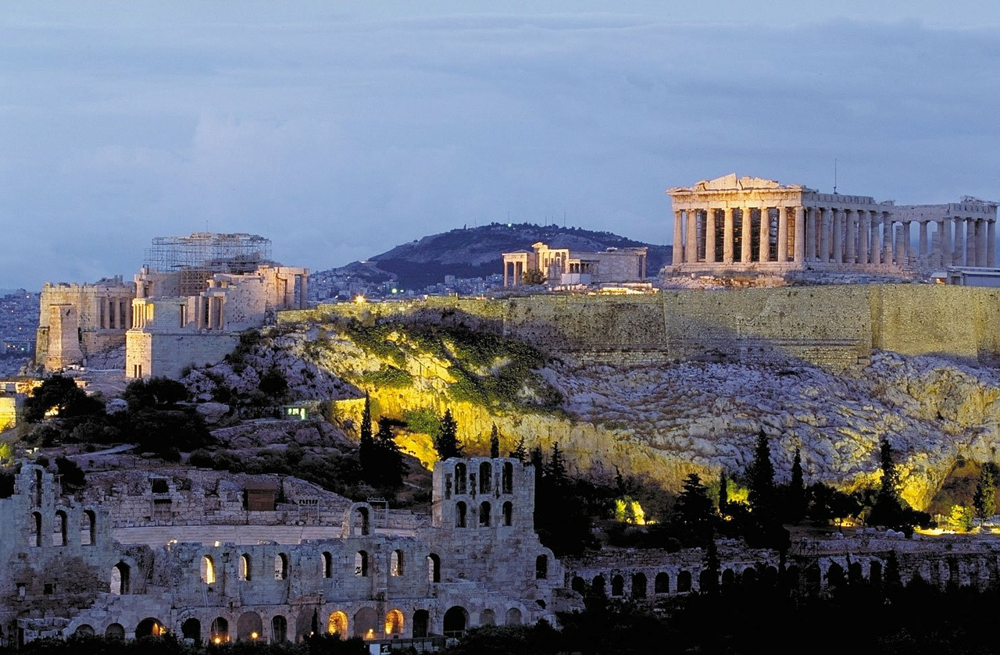
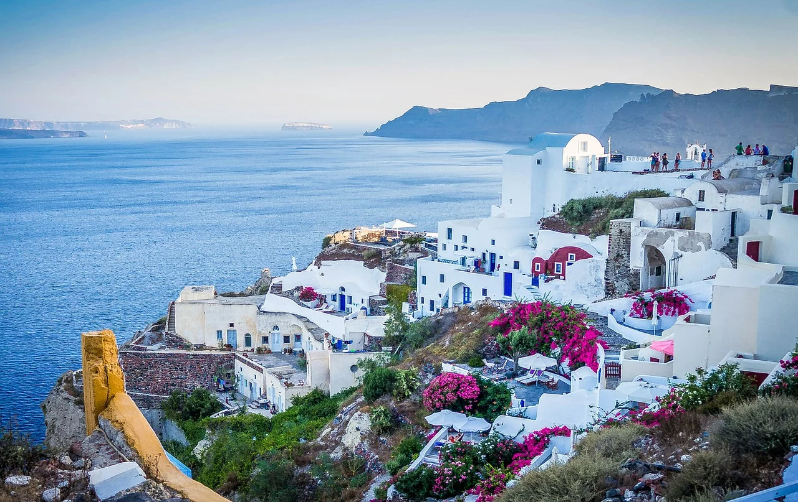
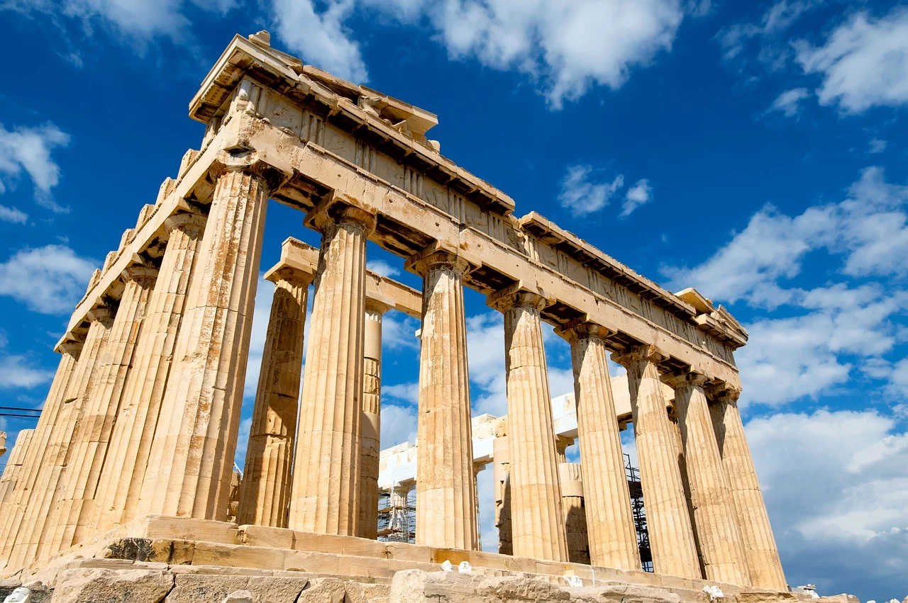
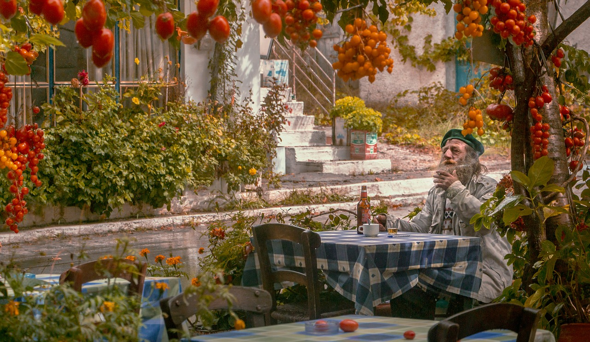

|




Athens |
TEMPERATURE |
Culture of AthensTraditions in Greece and Greek Islands either have a religious character or come from paganism. Furthermore, most of the traditions and festivals still followed and celebrated today are religious. That is why so many panygiria are organized in the country, which are actually religious celebrations of saints followed by traditional music and dance in the square of the village. These panigiria are a strong element of the Greek culture and take place all year round, especially in summer. The Greek music is of unbelievable diversity due to the creative Greek assimilation of different influences of the Eastern and Western culture of Asia and Europe. Music in Greece has a long history dating from ancient times, during which poetry, dancing, and music were inseparable and played an important part in ancient Greek everyday life and culture. Greek cuisine is famous for its good quality products and the amazing taste of its food and wines. Some dishes are the same everywhere in Greece. |
hahah |